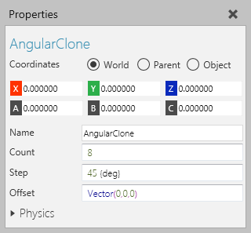
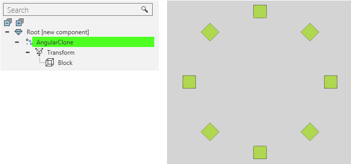

An Angular Clone feature clones its child features around its Z-axis.

Generally, you would use an Angular Clone with a Transform feature to define a radius and adjust the positioning of cloned objects.

| Name | Description |
| Name | Defines the name of the feature. |
| Count | Defines the number of times to clone child features.
0 hides the original child features. 1 shows the original child features. n+1 shows the original child features and n amount of clones. |
| Step | Defines the angle (in degrees) of separation between each clone. |
| Offset | Defines an offset for each clone in relation to one another. |
| Physics | Defines a set of physics properties for the feature. |